The pop-up Color Picker contains tabs for four palettes: Colors, Swatches, In Use, and Mixer. You can use these palettes to choose predefined colors.
Colors palette
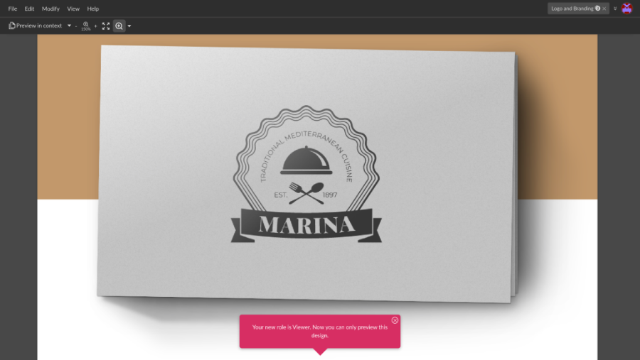
The Colors palette contains 24 default predefined colors. You can use these colors as basic hues when choosing colors or gradients.
The first row is a simple grayscale palette (from black to white with 10 shades of gray).
The second row contains both RGB and CMY colors plus other popular hues.
Swatches palette
The Swatches palette allows you to create, import, and export your own color palette.
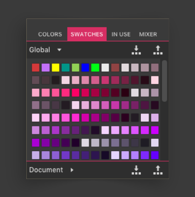
You can save the most intricate patterns and complex gradients inside a single swatch.
Creating and deleting swatches
- Click the Plus (+) icon to create a new swatch.
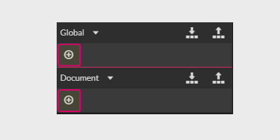
- Drag a thumbnail out of the palette to delete the swatch.

- If you want to use your palette across all documents, choose Global swatches.
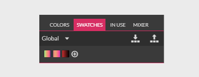
- If you want to use a document-specific palette, choose Document swatches. These palettes are stored within the file, keeping your artwork and color palettes together in a single document.
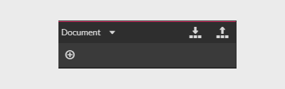
Exporting and importing swatches
You can share your palette with other Gravit Designer users by clicking Export to save your swatches inside a proprietary .gvswatch format.
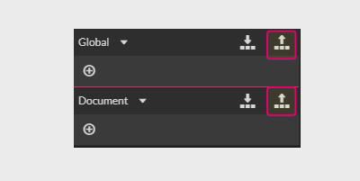
You can also use the Import icon to load swatches from your fellow designers.
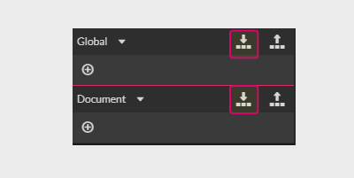
Note: All swatches are required to be .gvswatch format. There are tools that can help you to convert palettes created in other editors to .gvswatch:
- GIMP to Gravit Designer: https://obtusity.net/gravit/ works in your browser
- Adobe, Paint.net, CorelDRAW, GIMP to Gravit Designer: Cyotek Color Palette Editor
In Use palette
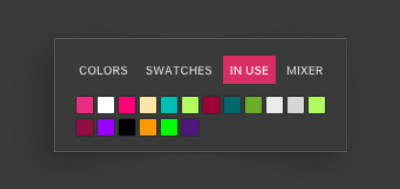
The In Use palette is very useful because it shows the colors of all vector objects in a document.
While some colors might be adjusted by the effects or blending modes, the In-Use palette displays the true colors used in the artwork.
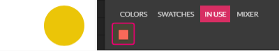
The In Use palette also helps to build intricate gradients that require repetition of the same colors. You simply create the base colors of the gradient and then replicate them on its slider by picking up the colors from the In Use palette.
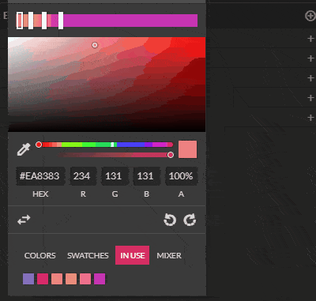
Mixer palette
The Mixer palette gives you some ideas about the tints, shades, tones, and mixes of the current color. It is extremely good for the development of gradients, shadows, and highlights.
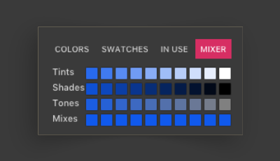
Try it out if you are struggling with the color of a shadow. It is a real time saver and a good learning tool.
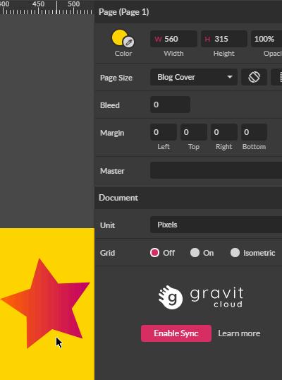
There are four major elements of the Mixer palette:
- Tints: a gradient between the current color and white, increasing brightness in the HSB color model
- Shades: a gradient between the current color and black, decreasing brightness in the HSB color model
- Tones: a gradient between the current color and gray, decreasing saturation in the HSB color model
- Mixes: Choose an object color, and then use the eyedropper to pick a color off the canvas. The Mixes row will give you a gradient between those two colors.